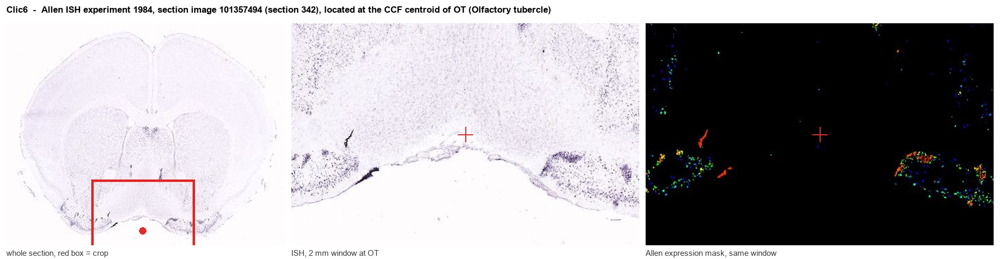
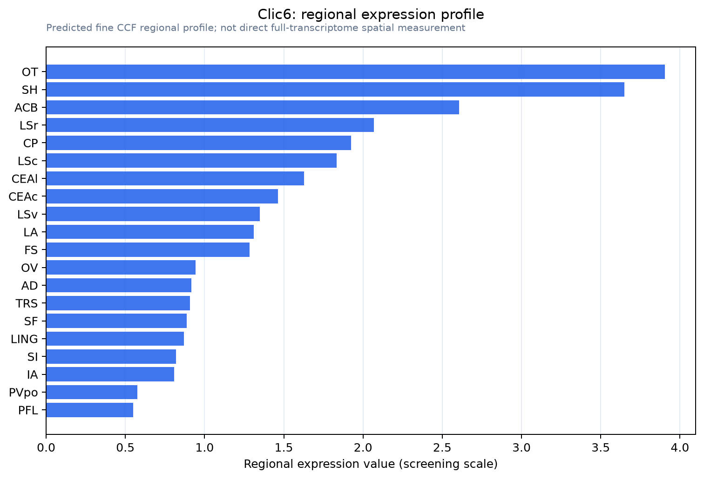

Clic6
Chloride intracellular channel protein 6 (Glutaredoxin-like oxidoreductase CLIC6) (EC 1.8.-.-)
Spatial tier: RESTRICTED · Class: ION_CHANNEL · Top region: OT (Olfactory tubercle) · Positive regions: 14/554
47.2Discovery Score
43.9Targetability Score
CEvidence grade C
What this means: Clic6: fine CCF profile is restricted toward OT (top regions: OT, SH, ACB, LSr, CP; 14 positive regions); direct spatial validation is still required.
Function in OT: evidence, prediction, innovation
- Gene function
- CLIC6 belongs to the chloride intracellular channel family, an unusual group of proteins that exist both as soluble glutathione-S-transferase-fold monomers and as membrane-inserted anion channels, and that also possess glutaredoxin-like oxidoreductase activity. Loyo-Celis et al. 2023 provided the first biophysical characterisation of CLIC6 as a chloride-conducting channel. It is strongly enriched in choroid plexus epithelium.
- Region function
- The olfactory tubercle is the ventral striatal region of the olfactory cortex: its D1 and D2 spiny neurons and islands of Calleja receive both piriform odour input and dense VTA dopamine, and they encode odour valence and odour-guided motivated behaviour.
- Published in this region
- inferred No region-specific literature found. The single most relevant finding is that CLIC6 binds dopamine D2-like receptors: Griffon et al. 2003 identified CLIC6 in a screen for D2, D3 and D4 receptor C-terminal interactors and showed the two co-localise, which is directly germane to a D2-rich ventral striatal region like the olfactory tubercle, although that work was not done in the tubercle itself.
- Predicted function
- Prediction: CLIC6 in the olfactory tubercle is predicted to act as a D2-receptor-associated scaffold and regulated chloride conductance in spiny projection neurons, coupling dopamine receptor occupancy to a change in chloride handling and hence to the efficacy of GABAergic inhibition. Conditional Clic6 deletion in Drd2-Cre tubercle neurons is predicted to leave D2 receptor expression intact but to alter D2 receptor trafficking and the chloride reversal potential, weakening dopaminergic modulation of inhibition and blunting the encoding of odour valence - measurable as a flattened attractive-versus-aversive odour response in tubercle recordings and reduced odour-guided place preference; a caveat is that some CLIC6 signal in this region may come from nearby choroid plexus and ventricular tissue.
- Innovation
- ★★★★★ 5/5 A striking, specific and completely untested molecular link between a chloride channel and D2 receptors in the dopamine-richest part of the olfactory striatum.
- Tools
- Clic6 knockout-first alleles from IMPC and Clic6 shRNA constructs; no selective pharmacology - the general CLIC blocker IAA-94 and indanyloxyacetic acid derivatives are the closest; anti-CLIC6 antibodies; D2 ligands quinpirole, raclopride and sulpiride to probe the interaction; Drd1-Cre and Drd2-Cre for tubercle cell types.
- References
Direct evidence located at the region

Allen ISH experiment 1984, section image 101357494 (section 342): the section that contains the CCF centroid of Olfactory tubercle according to the Allen image-to-atlas alignment (reference_to_image), with a 2 mm window around that point. Left: whole section, red box = window. Middle: ISH signal. Right: Allen's expression-mask view of the same window. open this image in the Allen viewer
Look it up yourself: Allen Mouse Brain ISH for Clic6Allen reference atlas: OT (structure 754)ABC Atlas MERFISH viewer(in the ABC Atlas choose dataset MERFISH-C57BL6J-638850-CCF, colour cells by gene "Clic6" or by parcellation_substructure "OT")All genes confined to OT + 3-D brain
Direct spatial evidence
MERFISH REGION LOCATOR

Regional expression figure

Predicted WMB × fine-CCF profile; not direct full-transcriptome spatial measurement.
Spatial profile
Evidence and specificity
- Evidence status
- PREDICTED_FINE
- Direct sources
- None; predicted localization only
- Exclusive threshold
- 12 positive regions out of 554
- Spatial specificity
- 0.382
- Top-region fraction
- 0.095
- Filter status
- PASS
Interpretation limits
- Cell-type-to-region projection is imputed expression, not direct spatial measurement.
- Adult reference atlases do not establish stability across age, sex, strain, state, or disease.
- Transcript abundance does not guarantee protein abundance or genetic-tool performance.